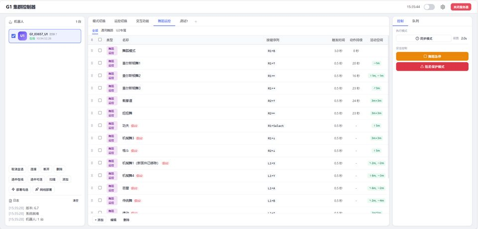
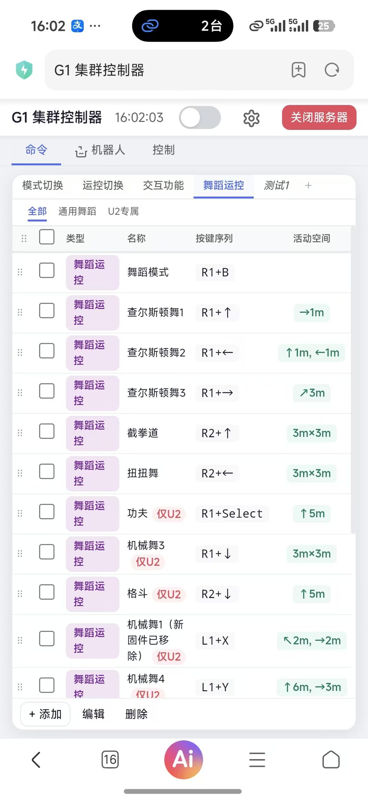

一套指令，多台 G1 同步执行
群控不是同时按下播放。每条指令由真实手柄按键序列构成，包含触发延迟、持续时长和动线范围， 通过队列控制顺序，同步间隔保证多台动作对齐。
同步间隔默认 2.0 秒
间隔调准，多台动作才不会散队。间隔在后台可改。
一键急停
不论队列执行到哪一步，红色按钮一键全部停止。现场演练第一课。
手机端下发
移动端跑同一张指令表：勾选设备、选队列、一键执行。现场没有电脑也能改。
舞蹈运控指令表
全部指令触发延迟 0.5 秒。数据取自群控软件本身，非示意图。


客户指定的舞蹈，我们让 G1 跳出来
一段舞蹈不是一段视频。从人体动作数据到真机稳定执行，中间要过四道验证，任何一道没过都不上真机。
-
人体动作提取
单目视频估算人体参数。手机拍一段舞，就能转成可用的动作数据。
-
仿真环境训练
在 IsaacSim 中训练校验。碰撞、跌倒、失控全部发生在仿真里，试错成本为零。
-
跨引擎复验
在 MuJoCo 中做二次验证。两个物理引擎结果一致，才进入真机部署。
-
真机部署调优
上机后还需收敛稳定性：地面材质、现场灯光、观众距离都会影响效果。
四步交付，责任到人
硬件由宇树提供，我们负责让它在你自己的场地上真正跑起来。每一步都有明确的产出物和验收标准。
-
现场勘察
地面、光线、网络、人流、充电位，任何一项都会影响可行性。勘察完成后出方案。
-
激光建图
建图使用本体雷达，不依赖外网。走偏现场可见，墙线偏差事后可修。
-
路线编排
站点顺序、每站朝向、讲解内容，全部在场馆自有后台配置。
-
联调交接
到站、讲解、被打断、返回路线全流程验证。培训两名人员：开机、改方案、急停。
交付清单
- 地图文件与站点标注
- 讲解词与导览方案
- 后台账号与操作手册
- 两人次上手培训
- 三个月远程维保
交付实绩
- 7
- 台导览设备已交付
- 3
- 个客户正在使用
- 3
- 套群控系统已交付
- 24米
- 直线路线，3 个站点
以上数据均来自已投入运行的现场，非预估。
两天 12 学时，教到你们的人能独立操作
不是听讲式科普。两天 12 学时，约 75% 时间在真机上操作，20 到 24 人分 4 组轮换。
2 天 12 学时 20–24 人分 4 组轮换 2 台 G1 EDU · 23 与 29 自由度各一台
七项
结业验收
- 跑通 SDK 与 DDS 通信
- 调用高层接口，实现 G1 走方形回原点
- 从机器人状态数据中读取真实关节数
- 在安全规程下完成起身站立与行走
- 实现单个关节小幅受控摆动
- 同一套代码先仿真、后真机
- 两人一组完成 G1 巡航与迎宾
常见问题
以下都是客户实际问过的问题，答案按我们的实际做法写。
G1 是我们自己买，还是你们提供？
两种都可以。你们自行采购本体，我们负责落地实施，按项目计费；也可由我们连同本体一并配齐。具体范围根据场地情况确定。
场地还没建好，能先做吗？
可以。先做勘察和建图，等场地成型后再定站点。建议在装修阶段就介入，装修完成后再进场会导致点位全部重做。
多久能上线？
标准场馆约两到三周：勘察与建图一周，点位配置、讲解词与联调一周，现场交接两到三天。演出类项目按出片周期计算，通常三到四周。
人多、断网、光线差，还稳定吗？
建图与定位运行在本体上，不依赖外网；讲解使用本地语音服务。断网情况下仍可继续带路，讲解功能受限，具体以现场实测结果为准。
后期改讲解词、增加站点，我们自己能操作吗？
可以。场馆自有后台即可修改站点和讲解词，保存后立即生效，语音下一次播报即为新内容。
群控最多能带几台设备？
一套群控服务支持多台设备，在界面勾选后队列一次下发。实际数量受现场无线网络环境限制，需勘察实测后确定。
舞蹈能换成我们自己的曲子吗？
可以。动作按按键与时间编排，节拍匹配即可修改；节拍不匹配需重新编排，另行计费。
培训能到我们学校办吗？
可以，设备由我们携带。需要一间能容纳两台 G1 行走的场地，走廊也可。
出现问题谁负责，多久到场？
交付含三个月维保：远程查看日志当天响应，到场时间按距离在合同中约定。设备属校方或自有资产，损坏责任划分建议写入合同。
我们不在同一个城市，能交付吗？
项目按全球范围安排：场地勘察、建图标注、联调与交接可以到场，其余环节远程完成。差旅与到场次数按项目写进合同。
说清你这块场地，
我给你一份落地方案
不用填表。加微信，把场地照片和尺寸发过来，我们给出设备数量、站点规划、上线周期和交付清单。
全球交付 · 工作时间 30 分钟内回复
扫一扫，加微信
备注「G1 + 场地类型」。通过后把场地照片、尺寸和点位数量发过来就行。
手机上扫不了自己的屏？保存图片，微信「扫一扫 → 相册」识别